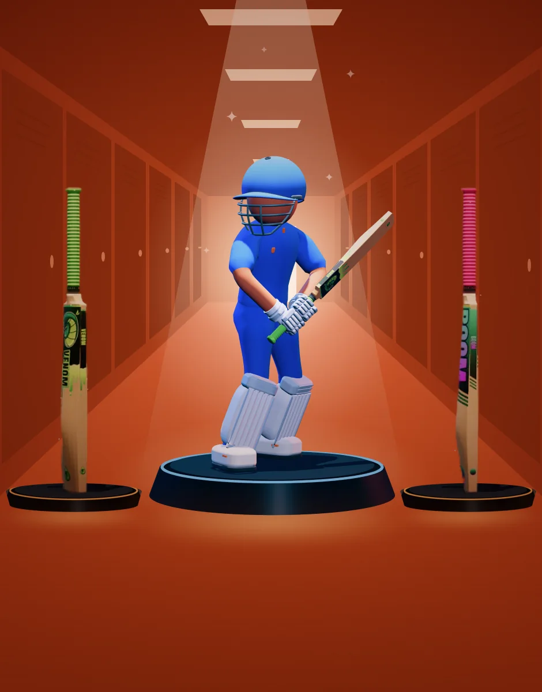
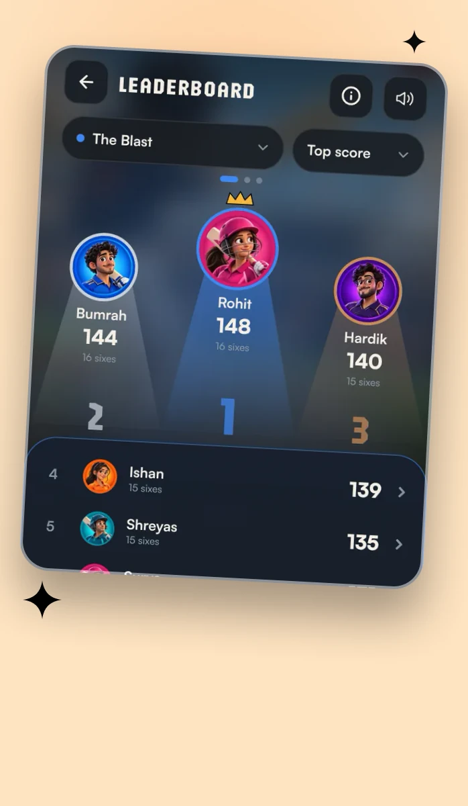
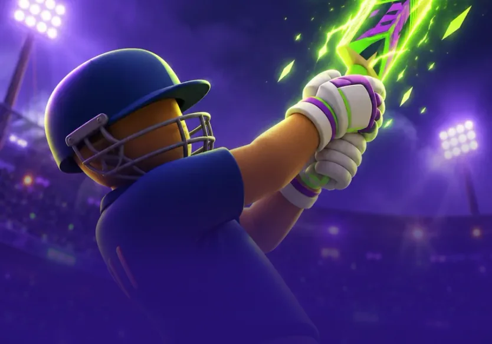
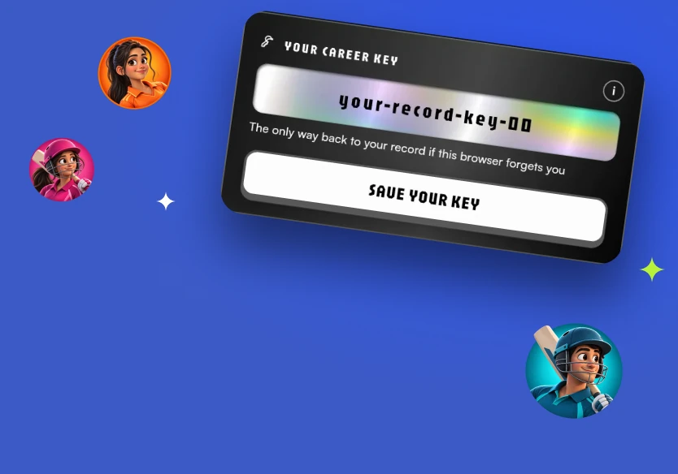
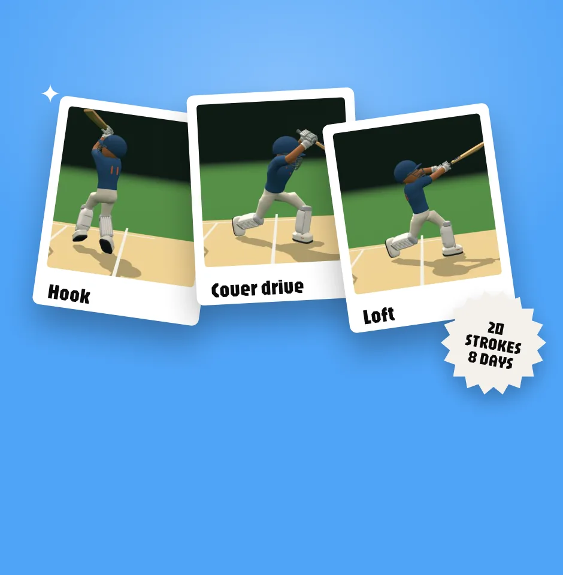
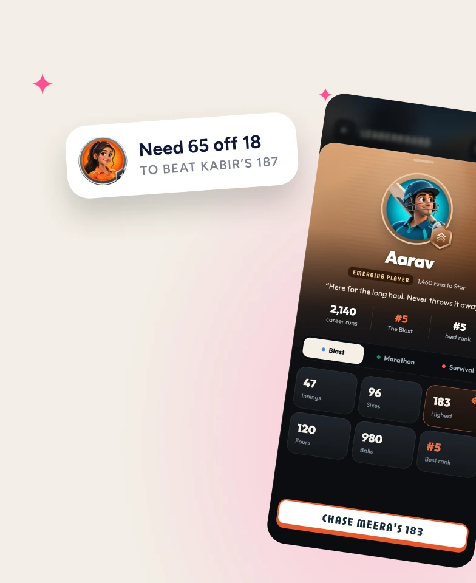
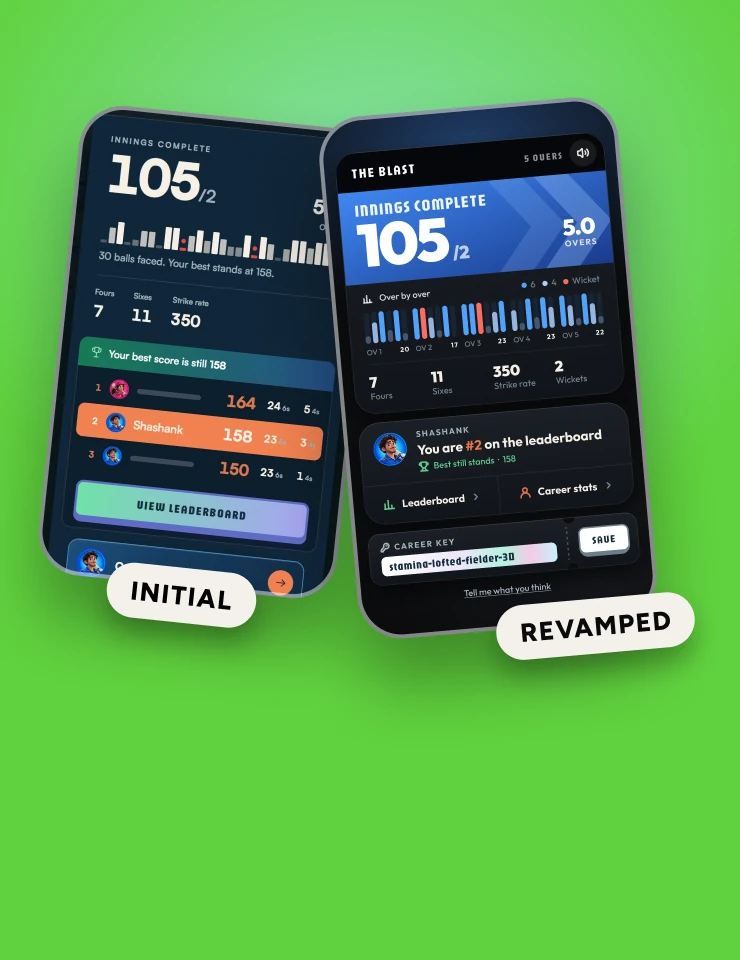

players found it, most of them through a link a friend sent.
The numbers, 16 Sep – 27 Oct
A small game, a real habit
No ads and no launch: just a link passed around. Here’s who came, how often they came back, and what they played on.
play-days came from players on their 11th day or later.
11+ days, 33%Everyone else, 67%
- 6321 day
- 2212 days
- 3013–5
- 2946–10
- 72611+
of play was on a phone, and two thirds of it on an iPhone.
Screen
Phone, 95%Desktop and tablet, 5%
System
iOS, 68%Android, 27%Other, 5%
The case studies
Seven stories from one game
Three are ready to read. The rest are being written, in the order they mattered to the game.

Dressing Room
Kits and bats earned, never bought. Skins drawn in Figma, wrapped onto 3D, built in three days.

Leaderboards (being written)
The board turned a toy into a game: fair ranks, career ladders, a crown for the top.

Super10 (being built)
Ten overs and a field you can see. Demand tested first.

Identity without
accounts (being written)
No sign-up, and Safari forgets after a week.

Rigging the
Cricket Shots
Twenty strokes rebuilt from slow-motion clips, reviewed at the millisecond and held by tests.

User
profiles
Every name on the board opens a profile you can chase. Designed one day, live the next.

UI revamp (being written)
Every feature added a button. How the screens drifted into clutter, and the redraw.
- Seven stories
- One game
- 479 players
- 765 commits
- Designed in Figma
- Built with Claude Code
The build
Seven weeks, 765 commits
Commits each week, and what reached players underneath. I designed in Figma, directed Claude Code, and tested every change on my own phone.
80
138
68
96
148
155
72
8
- Five overs in a browser, swipe batting, and a public link, all on day one
- Analytics go in
- Career boards and My Stats
- The career key
- Rivals: one link, one match
- Test Marathon starts
- The Marathon reaches players
- The Dressing Room
- Career passwords
- Player profiles
- Super10’s coming-soon card
- Still shipping